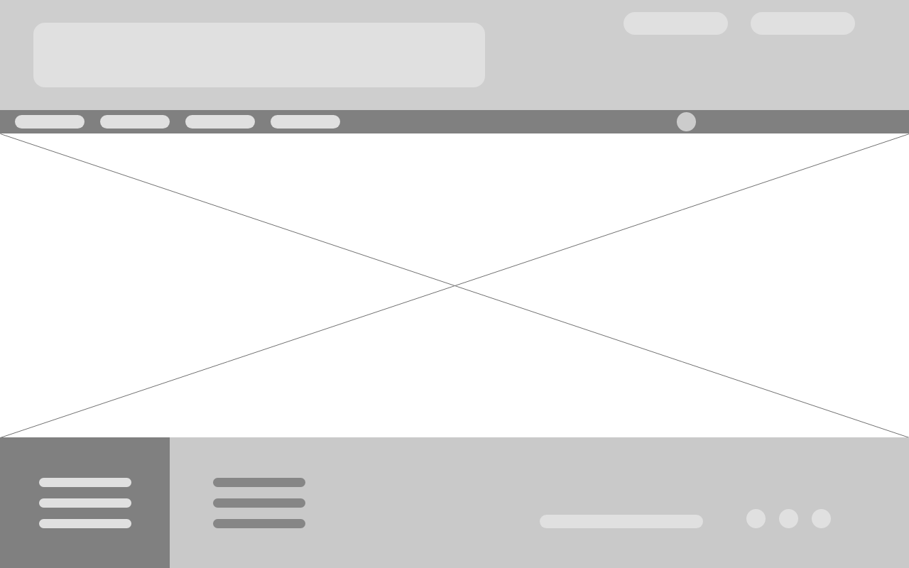
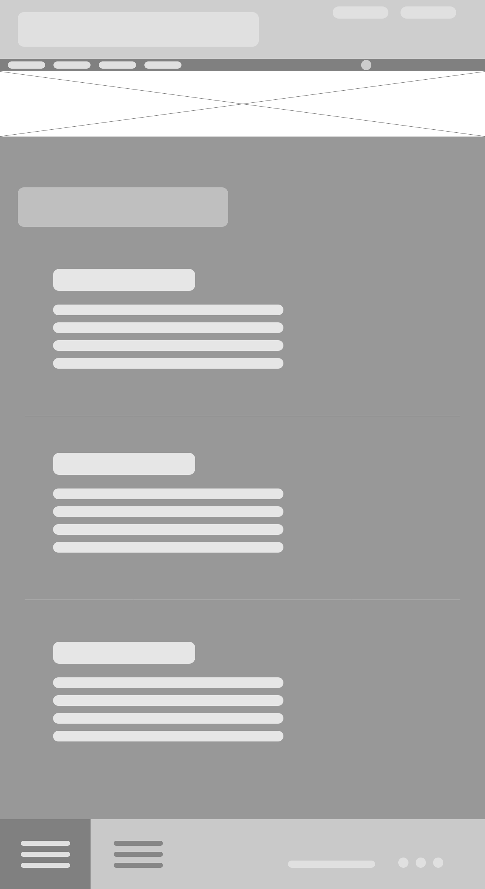
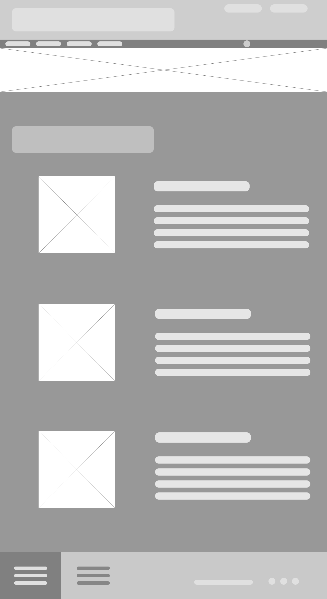
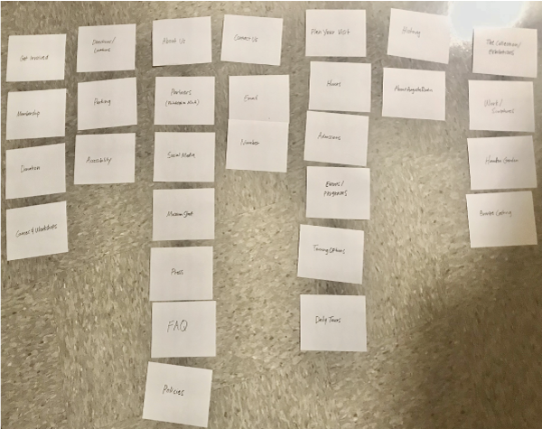
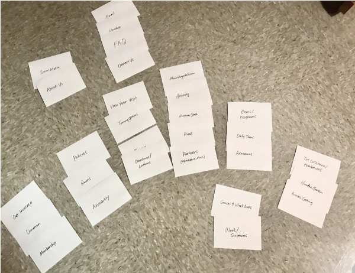
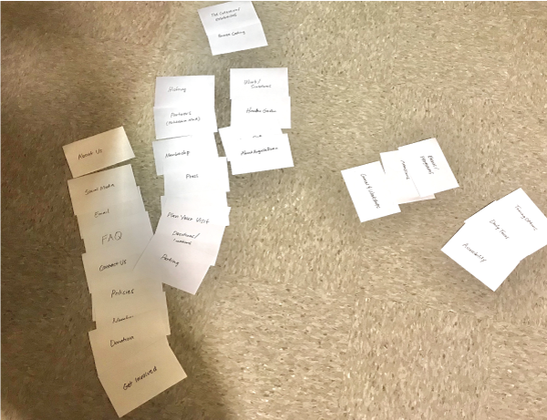
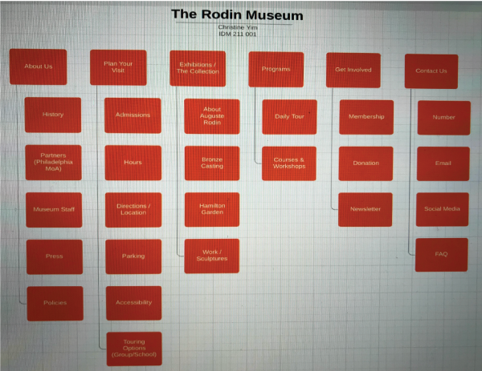
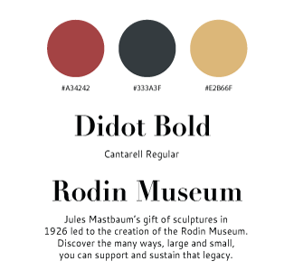
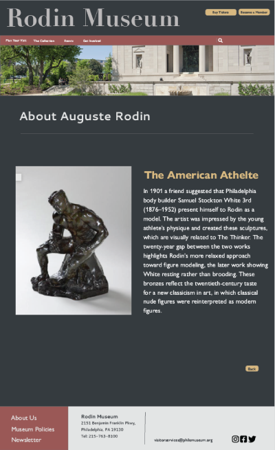

| PORTFOLIO
BACK
RODIN MUSEUM WEBSITE REDESIGN

The Rodin Museum is a popular attraction located in Philadelphia, Pennsylvania. The museum holds many collections of Auguste Rodin’s works, which include sculptures, drawings, paintings, studies, and even a garden that attracts quite a lot of visitors. Two of Rodin’s most famous works in this museum are The Thinker and The Gates of Hell.
MOTIVE
For my User Interface I class, we were told to find a website that was visually unappealing. I came across the website for The Rodin Museum. At first glance, the website had a tremendous amount of white space. The lack of color and unfitting typography would lower user engagement to an average person viewing this website. Rodin’s works are described to be quite bold and intense. Unfortunately, the museum’s website did not reflect the tremendous, beautiful works that were stored in the physical museum.
GOAL
My goal for this project was to develop an aesthetic interface that would keep users engaged as they interacted with the website. This would ultimately lead them to be able to obtain information about the museum and even be able to learn about Rodin’s works on the website.
WORK PROCESS
To confirm my initial theories about users wanting to or not wanting to continue using the website, I conducted quick interviews with people who have never seen the website. As I wanted to heavily focus on the design aspects of the website, I had five different people share what they thought about the original website’s home page at first glance.
I. WIREFRAME
Following the user research, I sketched many ideas for different pages of the potential redesign of the website. I then used the softwares Adobe XD to create some wireframes based off of some of the sketches that I found more favorable than others.


II. CARD SORTING
I then continued the process by conducting the card sorting method three times, one for each person. I asked three different people to quickly look at the structure of the original Rodin Museum website. I then distributed a pile of 29 index cards in which I wrote potential website page names such as ‘About Us’, ‘Parking’, or ‘Membership’. Their goal was to create a basic structure of the website with the cards to the best of their abilities. Once getting all three card sorting results, I would then analyze them and compile the results into one structure that would facilitate navigation for users. This method would eventually help me to create the main navigation bar.



III. COLOR THEME & TYPOGRAPHY
As I wanted the website to reflect the boldness of the work while keeping the tone elegant, I decided to go with a darker color theme with accent colors while incorporating a serif font for the headings and a sans serif font for captions and descriptions.
FINAL UI DESIGN



TOP